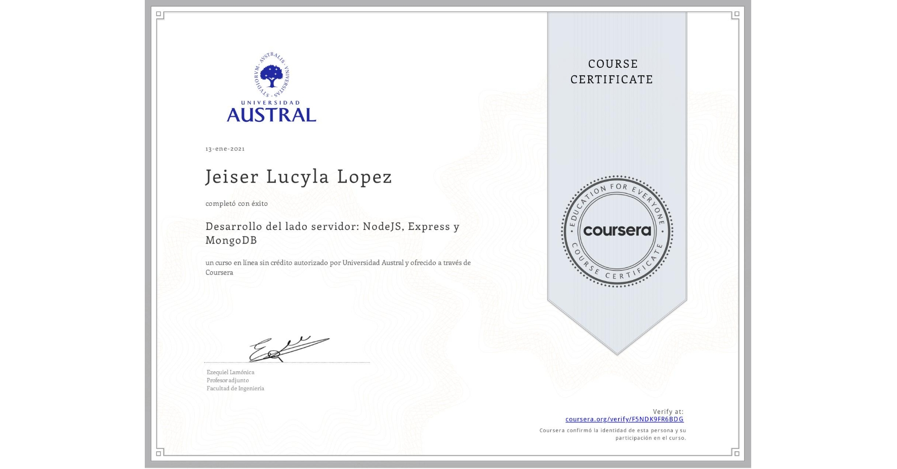
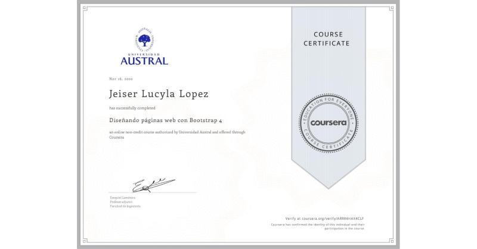
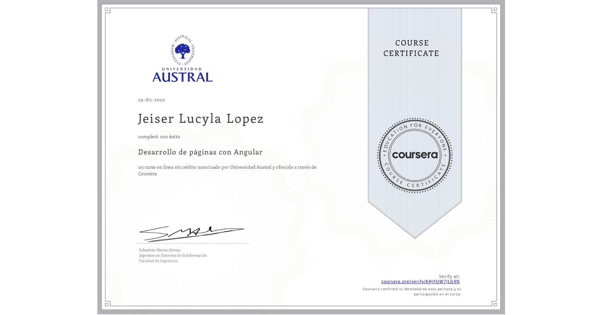
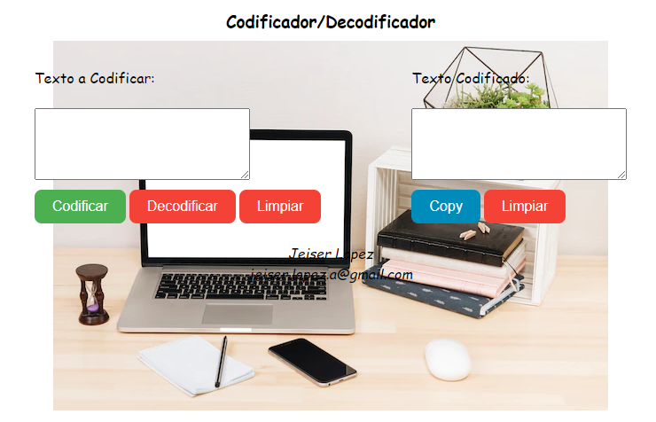
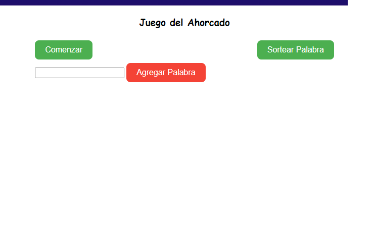

Formación y Cursos
-
ingeniero de Sistemas
-

Desarrollo Mongo y NodeJS
-

Diseño de páginas Web con Bootstrap
-

Desarrollo de Páginas Web con Angular
-

Desarrollo FrontEnd

Experiencia en Programación
-
Instructor en desarrollo Web (PHP,MySQL, HTML)
-
Desarrolador Web (SATAR Maracay- Aragua)
-
Desarrolador y analista de sistemas Web (Gobierno Bolivariano de Aragua)
Desarrollos Actuales
-

En esta aplicación colocamos un texto a ser codificado, basado en una clave ya estrablecida. Tambien permite decodificar texto.
Link Repo Link Page GitHub -

En esta aplicación podemos divertinos con el clásico juego del ahorcado. Podemos sortear las palabras ya precargardas o agregar una nueva...A divertirnos!.
Link Repo Link Page GitHub